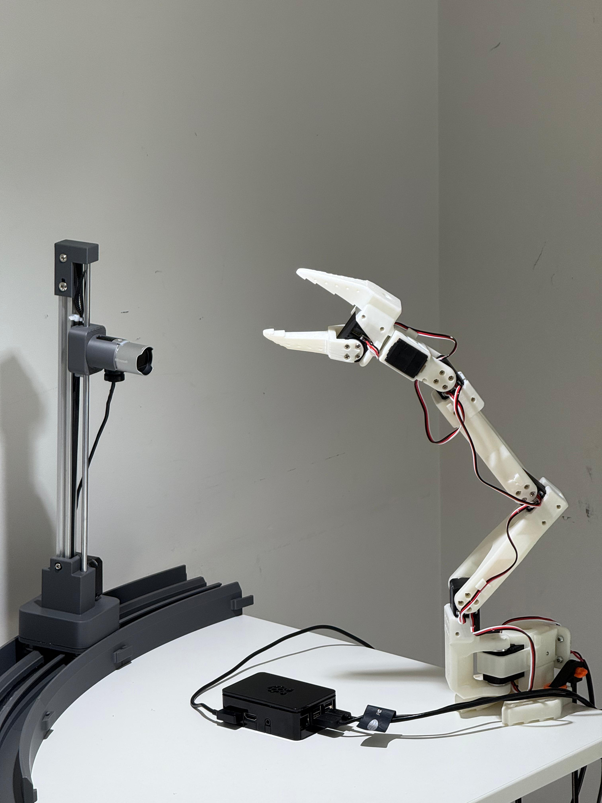
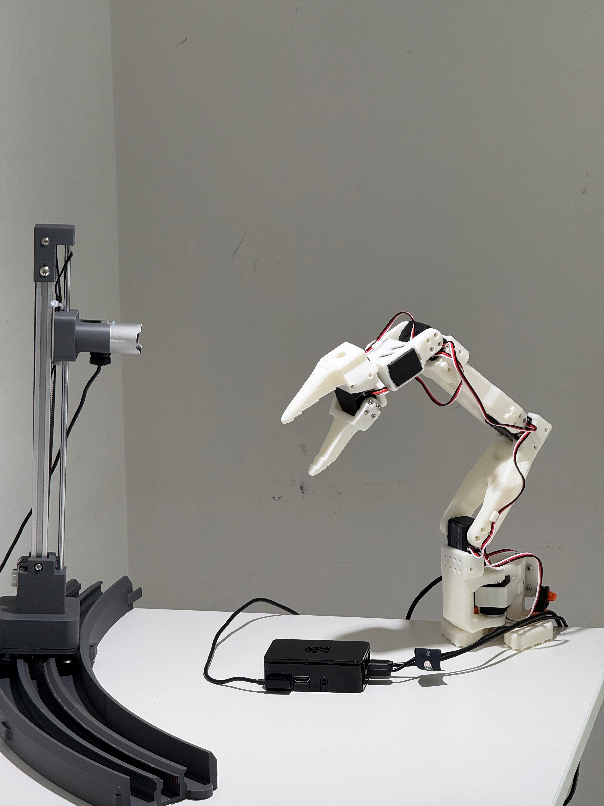

Demo
From command line to controlling the arm.
Run one install command on a Pi with hardware plugged in. ~20 minutes later you have an MCP server tailored to whatever you plugged in, with no per-device code in our repo. The clip below runs through that whole flow on our reference rig — install, Claude Desktop picks up the server, Claude calls a tool, arm moves. The buttons in the next section drive this same rig live, right now.
~40 s walkthrough — Pi install completes, Claude Desktop connects to the public tunnel, arm physically responds.
How the system builds itself.
The five spec stages run in order on any platform. If the camera or the arm are detected,
two extra framework steps run after — they give the agent extra context about
hardware we demo on a lot. A background daemon then keeps the server healthy by tailing
its logs and asking the agent to patch anything that breaks. A single
octopus expose command publishes the whole thing over a Cloudflare
quick-tunnel, so any MCP client on the public internet can reach it.



arm_set_joint_angle, arm_home,
arm_set_all_joints, plus diagnostics). Zero hand-written hardware code in
our repo.